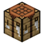

книга в двух частяхКоран
Толстая книга на 20 страниц, которая собирается из двух половин: нижней «Ветхий Минет» и верхней «Новый Омлет». Не горит в лаве, в стак не складывается, а ещё её иногда роняет Махорага.
Две половины
Нижняя половина крафтится из сырой свинины, верхняя из жареной. Обе ложатся в верстак рядом, в любую строку, и получается целая книга. Жми на результат, чтобы забрать.
Жми на сырую свинину: пожарю пять штук.
Рецепт в одну строку: «Ветхий» слева, «Новый» справа. Можно в любую из трёх строк верстака.
Открыть книгу
ПКМ открывает обычное окно книги, как у подписанной. Текст зашит в предмет: при каждом открытии страницы записываются заново. Тут только страницы про сам мод, остальные к нему отношения не имеют.
Как это устроено
- Предмет, а не подписанная книга. Своё окно не нужно: мод открывает ванильный
BookViewScreenи отдаёт ему страницы. - Каждая страница хранит свой цвет, жирность и курсив, как текст в
/tellraw. - Текст пишется в NBT при каждом ПКМ, поэтому поменять его нельзя: книга всегда перезапишется обратно.
Ачивка за чтение
«Знание — сила» проверяет, что в книге 20 страниц. Но страницы записываются до проверки, так что в игре ачивка прилетает с первого же ПКМ, листать не обязательно. Тут честнее: дочитай до конца.
Не горит
Как незеритовые вещи: брошенная в лаву или огонь книга не сгорает, а всплывает и качается на поверхности. Кидай что угодно из хотбара и сравни.
Клик по предмету в хотбаре бросает его в лаву. Клик по всплывшей книге вылавливает её обратно.
Где взять

10 свиных отбивных: 5 сырых и 5 жареных. Две половины, потом целая книга.
Выпадает при смерти Махораги, отдельным броском вместе с остальным лутом. Пункт №21.
Достижения
Версии
Двадцать страниц.
Не горит, не тонет, не складывается.